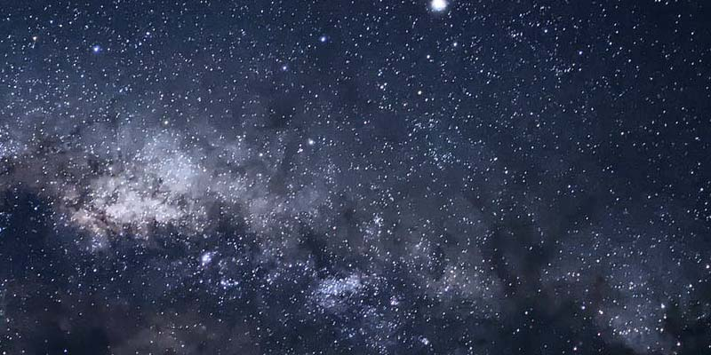

A Via Láctea é uma galáxia espiral, da qual o Sistema Solar faz parte. Vista da Terra, aparece como uma faixa brilhante e difusa que circunda toda a esfera celeste, recortada por nuvens moleculares que lhe conferem um intrincado aspecto irregular e recortado. Sua visibilidade é severamente comprometida pela poluição luminosa. Com poucas exceções, todos os objetos visíveis a olho nu pertencem a essa galáxia. Sua idade estimada é de mais de treze bilhões de anos, período no qual passou por várias fases evolutivas até atingir sua forma atual.[nota 1] Formada por centenas de bilhões de estrelas, a galáxia possui estruturas diferenciadas entre si. No bojo central, que possui forma alongada, há uma grande concentração de estrelas, sendo que o exato centro da galáxia abriga um buraco negro supermassivo. Ao seu redor estende-se o disco galáctico, formado por estrelas dos mais diversos tipos, nebulosas e poeira interestelar, dentre outros. É nesta proeminente parte da Via Láctea que se manifestam os braços espirais. Ao seu redor encontram-se centenas de aglomerados globulares. Entretanto, a dinâmica de rotação da galáxia revela que sua massa é muito maior do que a de toda a matéria observável, sendo este componente adicional denominado matéria escura, cuja natureza se desconhece.  Desde tempos imemoriais que a humanidade buscou descrever a natureza da galáxia, sendo esta referida em inúmeras lendas e mitos entre vários povos. Embora tenha sido proposto anteriormente, constatou-se que a faixa brilhante de aspecto leitoso (a partir do qual seu nome derivou-se) se tratava na verdade de um grande conjunto de estrelas a partir das observações de Galileu Galilei utilizando um telescópio. Entretanto, nos últimos dois séculos, a concepção científica da Via Láctea passou de uma simples nuvem de estrelas na qual o Sol situava-se próximo ao centro para uma grande galáxia espiral complexa e dinâmica, da qual nossa estrela é somente uma das bilhões existentes, o que aconteceu graças aos avanços tecnológicos de observação, que permitiram sondar estruturas além das nuvens moleculares. O Sistema Solar localiza-se a meia distância entre o centro e a borda do disco, na região do Braço de Órion, que na verdade trata-se somente de uma estrutura menor entre dois braços principais. Ao redor da galáxia orbitam suas galáxias satélites, das quais destacam-se as Nuvens de Magalhães. O Grupo Local é o aglomerado de galáxias esparso da qual a Via Láctea faz parte, sendo um de seus maiores componentes.
Deseja saber um pouco mais?